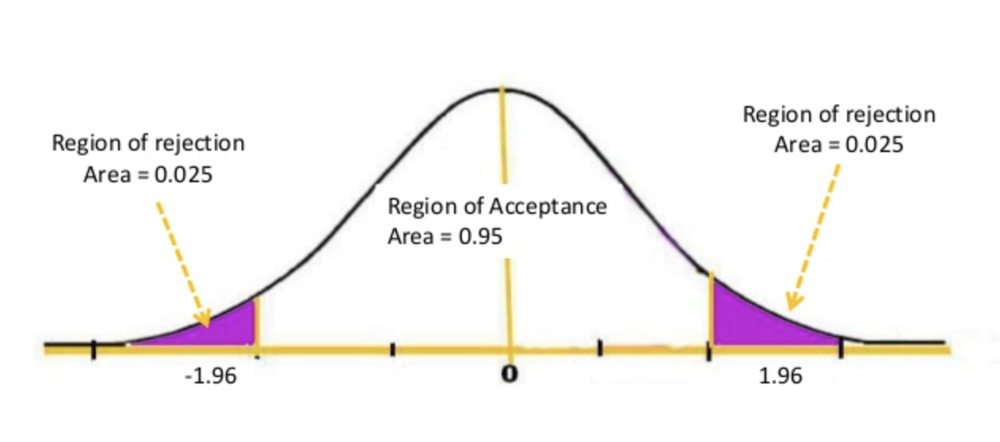
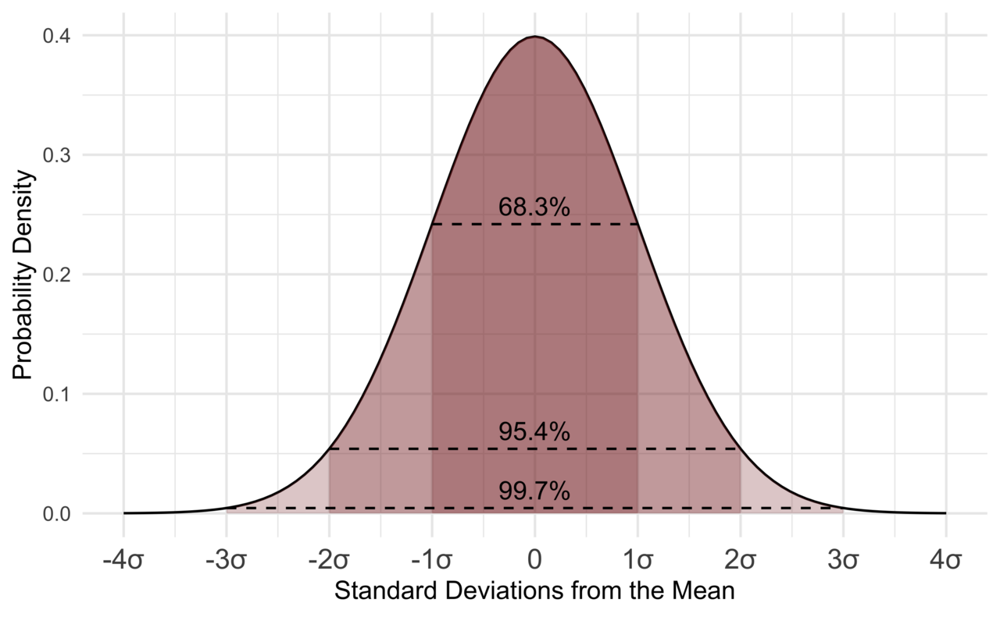
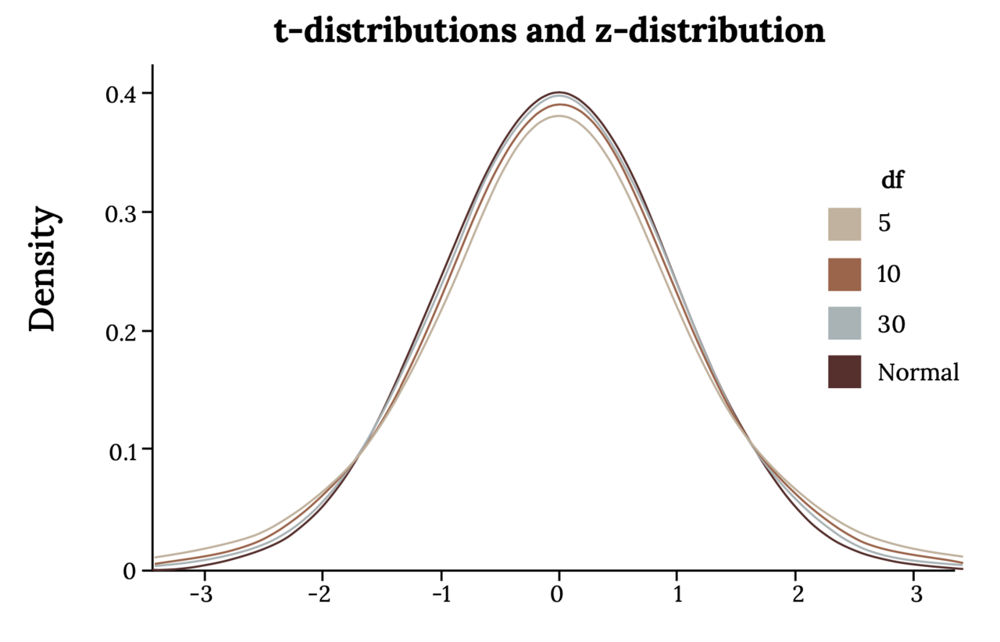
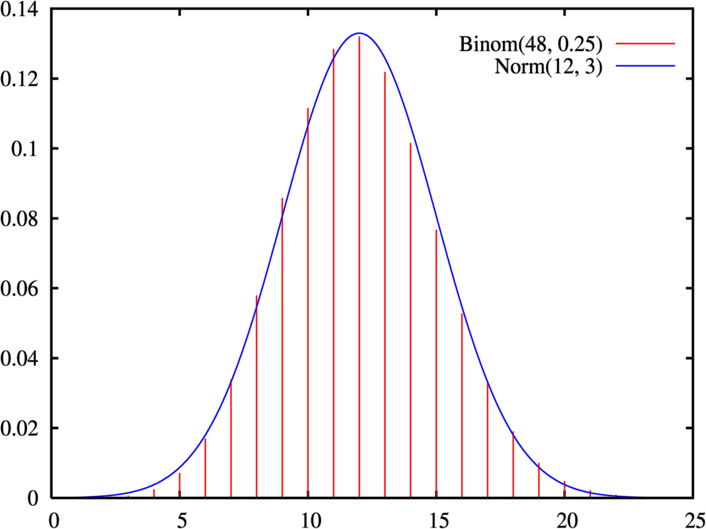

One-Sample Tests
You have a claim about the world and you have one sample of data. A hypothesis test is the disciplined way to ask whether the data are surprising enough to make you doubt the claim. This chapter builds a single five-step procedure that never changes, then pours three different one-sample situations into it: a mean when the population standard deviation is somehow known, a mean when it is not (the far more common case, and the reason Student's t distribution exists), and a proportion. Every formula here is the same idea in different clothing — how far is the estimate from the claim, measured in standard errors? Get comfortable with that one sentence and the rest is bookkeeping.
By the end of this chapter you can
- State a null and alternative hypothesis in symbols and in words, and choose one-tailed versus two-tailed correctly.
- Carry out the five steps of any hypothesis test in order, without memorizing a separate recipe for each test.
- Compute and interpret a z-test for a mean when σ is known.
- Compute and interpret a t-test for a mean when σ is unknown, and explain degrees of freedom.
- Compute and interpret the one-proportion z-test, including why the standard error uses p0 and not p̂.
- State a p-value correctly — and say precisely what it is not.
- Check the assumptions each test requires and say what happens when they fail.
- Distinguish statistical significance from practical importance, and relate a test to its matching confidence interval.
Section 1The five steps of a test

One procedure, every test
Students often try to memorize hypothesis testing as a pile of unrelated formulas. It is not. There is one procedure, and the only thing that changes between tests is which formula you plug into step 3. Learn the skeleton once and the whole chapter collapses into something manageable.
A hypothesis test begins with a claim about a population parameter — a fixed, unknown number describing the whole population, like the population mean μ or the population proportion p. You cannot see the parameter. You can only see a statistic computed from a sample: x̄ or p̂. The test asks a single question: if the claim were true, how unusual would a sample like mine be?
| Step | What you do | What it looks like |
|---|---|---|
| 1 | State the hypotheses about the parameter — before looking at the data | H0: μ = 500 Ha: μ ≠ 500 |
| 2 | Choose the significance level α and check the conditions the test requires | α = 0.05; random sample, normal enough |
| 3 | Compute the test statistic — distance from the claim, in standard errors | z or t = (estimate − claim) ÷ SE |
| 4 | Find the p-value (or compare to the critical value) | p = 0.0124; or |z| > 1.96? |
| 5 | Decide and interpret in context — in plain words, about the original claim | “Reject H0; there is evidence the mean differs from 500.” |
Two rules govern step 1. First, the null hypothesis H0 always contains the equality — it is the “nothing unusual is happening” statement, the specific number the arithmetic needs. Second, the alternative hypothesis Ha encodes what you are actually looking for, and it must be chosen from the research question, never from the direction the data happened to fall. Picking a one-sided alternative after seeing which way the sample leaned doubles your real error rate while pretending it did not.
Reading a p-value without getting it wrong
The p-value is the probability of getting a test statistic at least as extreme as the one you observed, computed under the assumption that the null hypothesis is true. That last clause is not decoration. It is the entire meaning of the number. A small p-value says: “data like these would be rare if H0 held,” which is grounds for doubting H0.
Suppose a test yields z = 2.50 with a two-tailed alternative. From the standard normal, the upper tail beyond 2.50 has area 0.0062. Because the alternative is two-sided, both tails count: p = 2 × 0.0062 = 0.0124. Compared with α = 0.05, we have 0.0124 < 0.05, so we reject H0. Compared with a stricter α = 0.01, we have 0.0124 > 0.01 and we would fail to reject. Same data, same evidence — only the threshold changed. That is worth sitting with, because it shows α is a convention you adopt, not a property of nature.
| Statement about p = 0.0124 | Correct? | Why |
|---|---|---|
| “If H0 were true, results this extreme happen about 1.2% of the time.” | Yes | This is the definition |
| “There is a 1.2% probability that H0 is true.” | No | The p-value assumes H0; it cannot also measure its probability |
| “There is a 98.8% probability the alternative is true.” | No | Same error, wearing a hat |
| “The effect is large and important.” | No | p-values shrink with sample size; they measure evidence, not size |
| “A large p-value proves H0 is true.” | No | Absence of evidence is not evidence of absence — we say fail to reject |
Notice the deliberately awkward phrase fail to reject. We never “accept” the null. A test that comes up empty may mean the null is true, or may simply mean the sample was too small to detect a real difference. Courts acquit for lack of evidence without declaring the defendant virtuous; statistics does the same.
Two ways to be wrong
Because you are deciding under uncertainty, you can err in two directions. A Type I error is rejecting a true null — a false alarm. Its long-run rate is exactly α, which is why you choose α before you look. A Type II error is failing to reject a false null — a miss — with rate β. The power of a test is 1 − β, the chance of catching a real effect when one exists. Power rises with larger samples, larger true effects, smaller variability, and larger α.
| H0 is actually true | H0 is actually false | |
|---|---|---|
| Reject H0 | Type I error (rate α) | Correct decision (power = 1 − β) |
| Fail to reject H0 | Correct decision | Type II error (rate β) |
- Every test follows the same five steps; only the step-3 formula changes.
- H0 holds the equality; Ha comes from the question, never from the data.
- A p-value is P(data this extreme given H0 is true) — not P(H0 is true).
- We fail to reject; we never accept. α is the Type I error rate, and power = 1 − β.
Section 2Z-test for a mean

Where the formula comes from
Take repeated random samples of size n from a population with mean μ and standard deviation σ. The sample means x̄ bounce around, but not wildly and not without pattern: they center on μ and they spread out with a standard deviation of σ∕√n. That quantity is the standard error of the mean, and the √n in the denominator is the mathematical statement of a very intuitive fact — bigger samples give steadier averages. Quadruple the sample and you halve the standard error.
If in addition the sampling distribution of x̄ is normal (either because the population is normal, or because n is large enough for the Central Limit Theorem to take over), then standardizing gives a familiar quantity:
z = ( x̄ − μ0 ) ∕ ( σ ∕ √n )
Read it out loud in English: how many standard errors is my sample mean away from the claimed mean? That is all a test statistic ever is. The z-test is the version you use when σ — the population standard deviation — is known ahead of time and does not have to be estimated from your data.
Be honest about how rare that is. In genuine research you almost never know σ while remaining ignorant of μ. The z-test earns its place in two ways: it is the honest tool when a manufacturing process, a calibrated instrument, or a standardized test has decades of history pinning σ down, and it is the clean stepping-stone that makes the t-test in the next section easy to understand.
A worked example
A bottling line is supposed to fill containers to a mean of 500 mL. Years of process records establish that the fill standard deviation is stable at σ = 4.0 mL. A quality technician pulls a random sample of n = 25 bottles and finds a sample mean of x̄ = 498.2 mL. Is the line off target? Test at α = 0.05.
Step 1 — hypotheses. The line could drift either way and both directions matter, so the test is two-tailed:
H0: μ = 500 Ha: μ ≠ 500
Step 2 — level and conditions. α = 0.05. The sample is random, σ is known from process history, and fill volumes from a machine are approximately normal. Conditions met.
Step 3 — test statistic. First the standard error, then the standardization:
SE = σ ∕ √n = 4.0 ∕ √25 = 4.0 ∕ 5 = 0.80 mL
z = (498.2 − 500) ∕ 0.80 = (−1.8) ∕ 0.80 = −2.25
The sample mean sits 2.25 standard errors below the target.
Step 4 — p-value. From the standard normal table, the area below z = −2.25 is 0.0122. The alternative is two-sided, so we double it:
p = 2 × 0.0122 = 0.0244
The critical-value route agrees: for a two-tailed test at α = 0.05 the critical values are ±1.96, and |−2.25| = 2.25 > 1.96, so the statistic lands in the rejection region.
Step 5 — decide and interpret. Since 0.0244 < 0.05, reject H0. There is statistically significant evidence at the 5% level that the mean fill volume differs from 500 mL; the sample suggests underfilling by about 1.8 mL. If instead the technician only cared about underfilling and had specified Ha: μ < 500 before collecting data, the p-value would be the single lower tail, 0.0122.
The confidence interval says the same thing
A two-sided test at level α and a 100(1 − α)% confidence interval are two views of one calculation. The 95% interval here is
498.2 ± 1.96 × 0.80 = 498.2 ± 1.57 → (496.63, 499.77)
The claimed value 500 lies outside that interval — which is exactly why the test rejected. The rule is general: a two-sided test rejects H0: μ = μ0 at level α precisely when the 100(1 − α)% interval excludes μ0. The interval is often the more useful report, because it also tells you the plausible size of the discrepancy, which a p-value never does.
| Alternative | p-value from z | Critical value at α = 0.05 | Reject when |
|---|---|---|---|
| Ha: μ ≠ μ0 | 2 × P(Z > |z|) | ±1.96 | |z| > 1.96 |
| Ha: μ > μ0 | P(Z > z) | +1.645 | z > 1.645 |
| Ha: μ < μ0 | P(Z < z) | −1.645 | z < −1.645 |
- z = (x̄ − μ0) ∕ (σ∕√n) — the estimate's distance from the claim, in standard errors.
- The standard error σ∕√n shrinks with √n: four times the data, half the wobble.
- Use the z-test only when σ is genuinely known, not estimated from the sample.
- A two-sided test at α rejects exactly when the matching 100(1 − α)% confidence interval excludes μ0.
Section 3T-test for a mean

The problem with substituting s for σ
In real work σ is unknown, so you estimate it with the sample standard deviation s. The formula looks almost identical:
t = ( x̄ − μ0 ) ∕ ( s ∕ √n )
But something subtle has changed. The z formula had one random quantity in it, x̄. The t formula has two, because s jumps around from sample to sample as well. That extra source of noise makes extreme values more common than the normal curve predicts. William Sealy Gosset worked this out around 1908 while running small-batch experiments at a brewery, publishing under the pen name “Student” — hence Student's t distribution.
The t distribution is symmetric and bell-shaped like the normal, centered at zero, but with heavier tails: more probability far from the center. Heavier tails mean larger critical values, which means the t-test demands more evidence before it will reject. That is not a defect — it is the honest price of not knowing σ.
Degrees of freedom
The t distribution is not one curve but a family, indexed by degrees of freedom. For a one-sample t-test, df = n − 1.
Why n − 1 rather than n? Because computing s requires first computing x̄ from the same data, and that costs you one piece of independent information. Concretely: if you know four deviations from the mean, the fifth is forced, because the deviations must sum to zero. Five numbers, four of them free — four degrees of freedom. Every degree of freedom you spend estimating something is one less available to measure variability.
As df grows, s becomes a reliable stand-in for σ, the extra noise fades, and the t curve converges to the standard normal. This is visible in any table of critical values.
| df | n | Two-tailed t* at α = 0.05 | Comment |
|---|---|---|---|
| 5 | 6 | 2.571 | Much stricter than 1.96 |
| 10 | 11 | 2.228 | Still noticeably stricter |
| 15 | 16 | 2.131 | Closing in |
| 20 | 21 | 2.086 | |
| 30 | 31 | 2.042 | About 4% above the normal value |
| 60 | 61 | 2.000 | Nearly indistinguishable |
| ∞ | — | 1.960 | The standard normal itself |
A worked example
A transit planner claims the mean one-way commute in a metropolitan area is 30 minutes. A random sample of n = 16 commuters gives x̄ = 33.4 minutes with s = 6.4 minutes. Test the claim at α = 0.05.
Step 1. H0: μ = 30 Ha: μ ≠ 30 (the claim could be wrong in either direction).
Step 2. α = 0.05. The sample is random; n = 16 is small, so we require the commute-time distribution to be roughly symmetric with no big outliers — a dotplot or boxplot should be inspected before proceeding.
Step 3.
SE = s ∕ √n = 6.4 ∕ √16 = 6.4 ∕ 4 = 1.60 minutes
t = (33.4 − 30) ∕ 1.60 = 3.4 ∕ 1.60 = 2.125 with df = 16 − 1 = 15
Step 4. The two-tailed critical value at df = 15 is t* = 2.131. Our statistic, 2.125, is a hair short of it, so the two-tailed p-value is a hair above 0.05 — software gives p ≈ 0.051.
Step 5. Since 0.051 > 0.05, we fail to reject H0. At the 5% level there is not quite enough evidence to conclude the mean commute differs from 30 minutes. The matching 95% interval tells the same story: 33.4 ± 2.131 × 1.60 = 33.4 ± 3.41 → (29.99, 36.81), which contains 30 — barely.
Now watch what a larger sample does. Suppose the same x̄ = 33.4 and s = 6.4 had come from n = 25:
SE = 6.4 ∕ √25 = 6.4 ∕ 5 = 1.28 t = 3.4 ∕ 1.28 = 2.656, df = 24, t* = 2.064, p ≈ 0.014
Identical estimated effect — 3.4 minutes — but now we reject comfortably. Nothing about the world changed; only the precision of our measurement did. This is why “not significant” must never be reported as “no difference,” and why a study's sample size belongs in every conclusion you read.
- t = (x̄ − μ0) ∕ (s∕√n) — use it whenever σ is unknown, which is nearly always.
- Estimating σ with s adds noise, so the t curve has heavier tails and larger critical values than the normal.
- df = n − 1, because one degree of freedom was spent computing x̄.
- As df → ∞, the t distribution becomes the standard normal.
Section 4Test for a proportion

Counting successes
Often the variable is categorical rather than numeric: yes/no, defective/acceptable, voted/did not. The parameter of interest is then the population proportion p, and the estimate is the sample proportion p̂ = x∕n, where x is the number of successes.
The count x follows a binomial distribution. When the sample is large enough, that lumpy binomial histogram is well approximated by a smooth normal curve — which is what lets us reuse the z machinery. Under H0: p = p0, the sampling distribution of p̂ is approximately normal with mean p0 and standard error √( p0(1 − p0) ∕ n ). Standardizing gives the one-proportion z-test:
z = ( p̂ − p0 ) ∕ √( p0(1 − p0) ∕ n )
Note carefully: there is no t-test for a proportion. For a mean, the center and the spread are separate parameters, so estimating the spread costs you degrees of freedom. For a proportion they are locked together — the variability p0(1 − p0) is completely determined by the value p0 the null already specifies. Nothing extra is being estimated, so no t correction is needed.
A worked example
A policy group claims that 60% of adults in a region support a proposed measure. An independent random sample of n = 400 adults finds 216 supporters. Does this contradict the claim? Test at α = 0.05.
Step 1. H0: p = 0.60 Ha: p ≠ 0.60
Step 2. α = 0.05. Check the success/failure condition using p0: np0 = 400(0.60) = 240 ≥ 10 and n(1 − p0) = 400(0.40) = 160 ≥ 10. The sample is random and 400 adults is far under 10% of the region's population, so observations are effectively independent. Conditions met.
Step 3. The sample proportion and the null standard error:
p̂ = 216 ∕ 400 = 0.54
SE0 = √( 0.60 × 0.40 ∕ 400 ) = √( 0.24 ∕ 400 ) = √0.0006 = 0.02449
z = (0.54 − 0.60) ∕ 0.02449 = (−0.06) ∕ 0.02449 = −2.45
Step 4. The area below z = −2.45 is 0.00714. Two-sided, so p = 2 × 0.00714 = 0.0143.
Step 5. Since 0.0143 < 0.05, reject H0. There is statistically significant evidence that the true support rate differs from 60%; the sample points to something closer to 54%.
The one place students reliably slip
The test and the confidence interval use different standard errors, and it is not an inconsistency. A test is conducted in the null's world, so it uses the null's variability, p0(1 − p0). A confidence interval assumes no particular value, so it must estimate variability from the data, using p̂(1 − p̂).
For our data the 95% interval is
SE = √( 0.54 × 0.46 ∕ 400 ) = √0.000621 = 0.02492
0.54 ± 1.96 × 0.02492 = 0.54 ± 0.0488 → (0.491, 0.589)
The interval excludes 0.60, agreeing with the rejection. Because the two standard errors differ slightly, test and interval can very occasionally disagree in borderline cases — a known quirk, not an error on your part.
| Situation | Standard error | Why |
|---|---|---|
| Hypothesis test | √( p0(1 − p0)∕n ) | Everything is computed assuming H0 is true |
| Confidence interval | √( p̂(1 − p̂)∕n ) | No null value is assumed, so estimate from the data |
| Condition to check | np0 ≥ 10 and n(1 − p0) ≥ 10 | The normal approximation to the binomial must hold |
| If the condition fails | Exact binomial test | Compute tail probabilities from the binomial directly |
- p̂ = x∕n; the test statistic is z = (p̂ − p0) ∕ √(p0(1 − p0)∕n).
- The test's standard error uses p0; the confidence interval's uses p̂.
- Check np0 ≥ 10 and n(1 − p0) ≥ 10; otherwise use the exact binomial test.
- There is no t-test for a proportion — the null value fixes the variability, so nothing extra is estimated.
Section 5Assumptions

Three conditions, in order of importance
A p-value is only as trustworthy as the assumptions used to compute it. Every one-sample test rests on three conditions, and they are emphatically not equally forgiving.
1. Random sampling. The data must come from a random sample of the population you want to describe, or from a randomized experiment. This is the assumption that cannot be rescued. If your sample is a convenience sample, a self-selected online poll, or the volunteers who happened to show up, then x̄ estimates the wrong thing and no amount of data fixes it — a bigger biased sample simply gives you a more precise wrong answer.
2. Independence. Each observation must carry information not already contained in the others. Sampling with replacement guarantees it; sampling without replacement is close enough provided n is no more than about 10% of the population. Clustered data break this badly: measuring five patients from each of ten clinics is not fifty independent observations, and treating it as such produces a standard error that is too small and a p-value that is too impressive.
3. Approximate normality of the sampling distribution. This is the one everyone worries about, and it is the most forgiving of the three. What must be roughly normal is the sampling distribution of x̄ — not the raw data. The Central Limit Theorem says that as n grows, the distribution of x̄ approaches normality regardless of the population's shape. Skewed populations simply need larger samples to get there.
| Sample size | What the data must look like | How to check |
|---|---|---|
| n < 15 | Close to symmetric, no outliers, no clear skew | Dotplot or boxplot — and be conservative |
| 15 ≤ n < 40 | Mild skew acceptable; outliers still a problem | Histogram plus a normal quantile plot |
| n ≥ 40 | Even fairly skewed data are usually fine | Still plot the data; look for outliers and errors |
| Any n, proportions | np0 ≥ 10 and n(1 − p0) ≥ 10 | Arithmetic, not a plot |
Robustness, and what to do when a condition fails
A procedure is robust if it still performs acceptably when its assumptions are mildly violated. The one-sample t-test is famously robust to non-normality once n is moderate, but it is not robust to outliers in small samples — a single mistyped value can drag both x̄ and s and flip a conclusion. Nor is any test robust to a non-random sample or to dependence between observations. Those failures do not merely widen the uncertainty; they invalidate it.
| Test | Requires | If violated |
|---|---|---|
| z-test for μ | Random, independent, σ known, x̄ normal | If σ is estimated, use the t-test instead |
| t-test for μ | Random, independent, population not strongly skewed for small n | Increase n, or use a nonparametric test such as the sign or signed-rank test |
| One-proportion z-test | Random, independent, np0 ≥ 10 and n(1 − p0) ≥ 10 | Use the exact binomial test |
| All three | Hypotheses fixed before seeing the data | The stated α is fiction; the real error rate is higher |
The assumption nobody writes down
Beyond the mathematical conditions sits a procedural one: the hypotheses, the significance level, and the direction of the alternative must be settled before the data are examined. Testing many outcomes and reporting only the significant one, or switching to a one-tailed alternative after seeing which way the sample fell, inflates the Type I error rate far above the α you claimed. With twenty independent tests at α = 0.05, you expect one “significant” result by chance alone even if nothing whatsoever is going on.
Finally, remember what a test cannot tell you. Statistical significance means “probably not just noise.” It does not mean large, important, or worth acting on. With n = 100,000, a difference of 0.02 mL in fill volume will be wildly significant and utterly irrelevant. With n = 8, a difference that would change clinical practice may fail to reach significance. Report the estimate and its confidence interval alongside the p-value, and judge importance on the scale of the actual measurement — minutes, milliliters, percentage points — not on the scale of the p-value.
- Random sampling is the unforgiving assumption — no sample size repairs bias.
- Independence holds if you sample randomly and n is under 10% of the population; clustering breaks it.
- Normality applies to the sampling distribution of x̄, and the CLT delivers it as n grows.
- Hypotheses must be fixed before the data are seen, and significance is not the same as importance.
The chapter in one breath
- Every hypothesis test is the same five steps: hypotheses, level and conditions, test statistic, p-value, conclusion in context.
- A test statistic always answers one question: how many standard errors is the estimate from the claim?
- Use the z-test for a mean, z = (x̄ − μ0)∕(σ∕√n), only when σ is genuinely known.
- Use the t-test, t = (x̄ − μ0)∕(s∕√n) with df = n − 1, when σ is estimated — heavier tails, larger critical values.
- Use the one-proportion z-test, z = (p̂ − p0)∕√(p0(1 − p0)∕n); the test uses p0 in the SE, the interval uses p̂.
- A p-value is the probability of data this extreme given the null is true — never the probability the null is true.
- We fail to reject rather than accept; “not significant” may only mean the sample was too small.
- Every test assumes randomness, independence, and adequate normality — and randomness is the one nothing can repair.
ReferenceWords worth knowing
A quick reference for the vocabulary of this chapter — skim it now, and return to it whenever a term in a results section stops making sense.
- Alpha (α), significance level
- The threshold chosen in advance for how much evidence is required to reject H0; also the long-run rate of Type I errors. Commonly 0.05, but a convention rather than a law.
- Alternative hypothesis (Ha)
- The statement the researcher is looking for evidence of, expressed with ≠, >, or <. Chosen from the research question, never from the observed data.
- Central limit theorem
- The result that the sampling distribution of x̄ approaches a normal distribution as n grows, whatever the shape of the population.
- Critical value
- The cutoff (z* or t*) that marks the boundary of the rejection region for a chosen α and alternative.
- Degrees of freedom (df)
- The number of independent pieces of information available for estimating variability; n − 1 for a one-sample t-test, because x̄ consumed one.
- Effect size
- A measure of how big a difference is, on the scale of the data or standardized — the question a p-value does not answer.
- Null hypothesis (H0)
- The “no effect, no difference” statement containing the equality; the assumption under which the p-value is computed.
- One-proportion z-test
- The test of H0: p = p0 using z = (p̂ − p0) ∕ √(p0(1 − p0)∕n).
- One-tailed (one-sided) test
- A test whose alternative points in a single direction, placing the entire rejection region in one tail. Must be specified before data collection.
- p-value
- The probability, assuming H0 is true, of obtaining a test statistic at least as extreme as the one observed.
- Power
- 1 − β: the probability of correctly rejecting a false null. Increases with larger n, larger true effects, less variability, and larger α.
- Rejection region
- The set of test-statistic values, in the tail or tails, that lead to rejecting H0 at the chosen α.
- Robustness
- A procedure's ability to perform acceptably when its assumptions are mildly violated. The t-test is robust to modest non-normality but not to outliers in small samples.
- Sample proportion (p̂)
- The count of successes divided by the sample size, x∕n; the point estimate of the population proportion p.
- Standard error
- The standard deviation of a sampling distribution: σ∕√n for a mean with σ known, s∕√n when estimated.
- Statistically significant
- Describes a result whose p-value falls below α — meaning “unlikely to be noise alone,” not “large” or “important.”
- Student's t distribution
- A symmetric, bell-shaped family of distributions indexed by degrees of freedom, with heavier tails than the normal; it converges to the standard normal as df grows.
- Test statistic
- A standardized measure of how far the sample estimate lies from the null value, in standard errors; here z or t.
- Two-tailed (two-sided) test
- A test whose alternative is ≠, splitting the rejection region between both tails and doubling the one-tail probability to get the p-value.
- Type I error
- Rejecting a null hypothesis that is actually true — a false alarm. Its long-run rate is α.
- Type II error
- Failing to reject a null hypothesis that is actually false — a miss. Its rate is β.
- z-test
- A test whose statistic is compared to the standard normal distribution; for a mean it requires that σ be known.